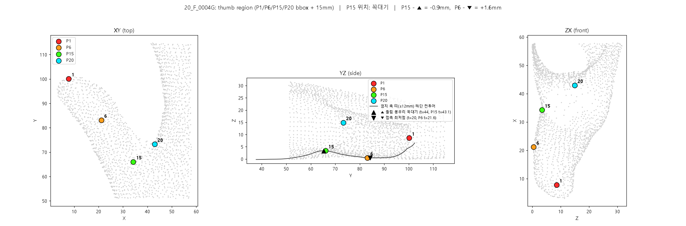
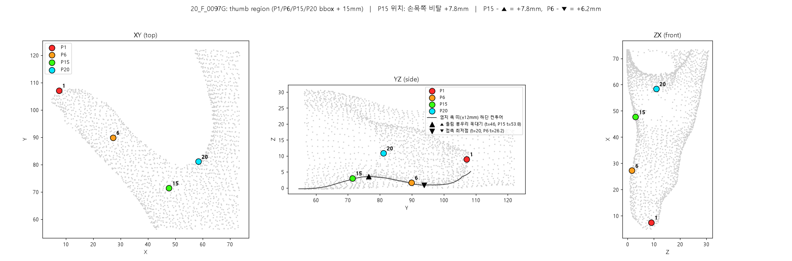

밑면 컨투어 극점 접근법: 엄지 길이 오차 보고
엄지 축을 따라 손바닥 밑면이 유리에서 얼마나 떠 있는지를 곡선으로 만들고, 그 곡선의 접촉 최저점(▼)을 P6, 들림 봉우리 꼭대기(▲)를 P15로 보는 접근법입니다(report/thumb_views/의 3평면 그림이 이 방식). 이 방식으로 엄지 길이를 재면 15명 중 몇 명이 목표 오차 안에 들어오는지 정리했습니다.
결과. 봉우리 꼭대기를 P15로 쓰면 엄지 길이 평균 오차 4.3mm, 0.5mm 이내 13%(2/15), 1mm 이내 13~20%(2~3/15), 2mm 이내 33%(5/15)입니다. 정답 P1·정답 축을 넣어도 같습니다. 같은 입력에 채택된 창 규칙을 쓰면 1.70mm, 20 / 40 / 60%입니다. 봉우리는 P15가 있는 구역은 맞히지만 그 안의 위치가 사람마다 −2 ~ +11mm 다릅니다.
1. 접근법
엄지 축과 띠
P1에서 P15 쪽으로 가는 직선을 축으로 잡고, 축 양옆 ±12mm 띠 안의 표면 점만 씁니다(가설 검정에서는 SW의 정답 P1·P15로 축을 그어 축 오차를 배제).
밑면 컨투어
축을 따라 1mm 간격 지점(스테이션)마다 두께 1.5mm 판을 자르고, 판 안 점들 중 가장 낮은 z를 취해 이은 곡선. 앞뒤 2지점씩 평균해 평활합니다. 값이 0이면 유리에 닿은 것, 크면 떠 있는 것입니다.
극점 두 개
▼ 접촉 최저점: P1에서 5~40mm 구간의 최저점(엄지 첫마디 패드가 유리에 눌린 자리). ▲ 들림 봉우리: 25~62mm 구간의 최고점(엄지 밑과 엄지두덩 사이에서 손바닥이 떠오른 자리).
가설
P6 = ▼, P15 = ▲. 그러면 엄지 길이 = P1에서 ▲까지의 xy 거리.


report/thumb_views/<이름>.png.
2. 평가한 변형
길이는 모두 P1에서 축 위의 P15 후보까지의 xy 거리이고, 기준값은 SW의 P1–P15 거리입니다. 15명 모두 평가했으며, 데이터로 정한 값이 있는 변형(C의 각도 상수, D의 회귀 계수)은 해당 손을 빼고 정했습니다.
- A
- 가설 검정판: SW의 정답 P1·정답 축을 그대로 쓰고 P15만 ▲로. thumb_views 그림과 같은 조건이며, 이 방식의 상한입니다.
- B
- 원래 제안한 메쉬 전용 3단계 체인: P1 = 중심선 끝점(apex) → P6 = 엄지 최저 z점 → P1P6 축 → 그 축의 컨투어(띠 ±8mm) 봉우리 = P15.
- C
- 메쉬 전용, 지금 최선의 입력: P1 = 띠 규칙, 축 = 최단순 축(P1→P20′ 선 14.6° 회전) → 컨투어(±12mm) 봉우리 = P15.
- D
- 극점 간격 회귀: ▼–▲ xy 거리로 엄지 길이를 1차 회귀(LOO). "극점 간격이 길이와 비례한다"는 후속 가설.
- E
- 참고: C와 같은 P1·축에 채택된 창 규칙(P20′ 발 85~95° 안 컨투어 최고점)을 쓴 값.
3. 결과
| 변형 | 길이 MAE | 최대 | 편향 / sd | ≤0.5mm | ≤1mm | ≤2mm |
|---|---|---|---|---|---|---|
| A 정답 P1·정답 축 + 봉우리 | 4.26 | 10.7 | −3.59 / 3.85 | 2명 (13%) | 3명 (20%) | 5명 (33%) |
| B 메쉬 체인 apex → P6 최저점 → 축 → 봉우리 | 4.30 | 8.7 | −2.73 / 4.17 | 0명 (0%) | 0명 (0%) | 4명 (27%) |
| C 띠 P1 + 최단순 축 + 봉우리 | 4.26 | 9.7 | −3.19 / 4.04 | 2명 (13%) | 2명 (13%) | 5명 (33%) |
| D 극점 간격 회귀 (LOO) | 3.25 | 6.3 | −0.14 / 3.79 | 1명 (7%) | 3명 (20%) | 6명 (40%) |
| E 참고: C와 같은 입력 + 채택 창 규칙 | 1.70 | 4.2 | +0.14 / 2.03 | 3명 (20%) | 6명 (40%) | 9명 (60%) |
사람별 길이 오차(mm, 예측 − 기준값). 오른쪽 두 열은 정답 점이 극점에서 축 방향으로 얼마나 떨어져 있는지(+ = 손목 쪽)입니다.
| 손 | A | B | C | D | E (참고) | P15 − ▲ | P6 − ▼ | ▲ 높이 z | P15의 위치 |
|---|---|---|---|---|---|---|---|---|---|
| F_0004 | +0.9 | +1.9 | +1.9 | +5.9 | +0.9 | −0.9 | +1.6 | 3.3 | 꼭대기 |
| F_0097 | −7.8 | −7.8 | −7.8 | −4.9 | +0.2 | +7.8 | +6.2 | 3.7 | 손목 쪽 비탈 |
| F_0179 | +2.4 | +4.4 | +4.4 | +6.3 | +2.4 | −2.4 | +6.0 | 3.9 | 꼭대기 |
| F_2633 | −10.7 | −8.7 | −9.7 | −2.0 | −0.7 | +10.7 | +2.9 | 1.7 | 봉우리 약함 |
| F_2634 | −5.2 | −4.2 | −5.2 | −0.6 | +2.8 | +5.2 | +7.7 | 2.1 | 손목 쪽 비탈 |
| F_2635 | +0.4 | +1.4 | +0.4 | +5.0 | +2.4 | −0.4 | +3.6 | 2.5 | 꼭대기 |
| F_2636 | −5.4 | −4.4 | −4.4 | +1.9 | −0.4 | +5.4 | +5.5 | 3.2 | 손목 쪽 비탈 |
| F_2637 | −4.0 | −3.0 | −3.0 | −2.6 | +1.0 | +4.0 | +1.5 | 1.8 | 봉우리 약함 |
| M_1113 | −3.2 | −2.2 | −3.2 | +0.9 | −4.2 | +3.2 | +2.5 | 3.6 | 손목 쪽 비탈 |
| M_1114 | −7.5 | −7.5 | −6.5 | −4.6 | −1.5 | +7.5 | +6.2 | 2.6 | 손목 쪽 비탈 |
| M_1115 | −1.4 | −1.4 | −1.4 | 0.0 | −1.4 | +1.4 | +2.7 | 5.2 | 꼭대기 |
| M_1116 | −6.1 | −6.1 | −6.1 | −3.9 | −3.1 | +6.1 | +9.7 | 3.4 | 손목 쪽 비탈 |
| M_1117 | −7.4 | −7.4 | −8.4 | −1.8 | −0.4 | +7.4 | +3.3 | 4.0 | 손목 쪽 비탈 |
| M_1559 | +1.3 | +1.3 | +1.3 | −5.2 | +2.3 | −1.3 | +8.4 | 2.9 | 꼭대기 |
| M_1573 | −0.2 | +2.8 | −0.2 | +3.4 | +1.8 | +0.2 | +8.4 | 3.2 | 꼭대기 |
4. 왜 안 되나
- P15는 봉우리 위에 있지만 어디인지가 사람마다 다릅니다. 정답 P15 − ▲ = +3.6 ± 3.9mm. 꼭대기(±2.5mm 이내)인 손이 6명(0004, 0179, 2635, 1115, 1559, 1573), 꼭대기에서 손목 쪽으로 3~8mm 내려간 비탈인 손이 8명(0097, 2634, 2636, 2637, 1113, 1114, 1116, 1117), 봉우리가 약한 손(높이 2mm 미만)이 2633·2637입니다. 봉우리의 높이·폭과 이 위치 차이 사이에 관계는 없었습니다.
- P6도 마찬가지입니다. 정답 P6 − ▼ = +5.1 ± 2.6mm. 접촉 구간(10~15mm)이 평평해 최저점이 어디 찍히느냐가 불안정하고, 정답 P6는 구간의 손목 쪽 끝 근처입니다.
- 노이즈가 아니라 계통적입니다. 평활 폭(1~6mm), 띠 폭(6/8/12mm), 표면 점 50% 무작위 제거(8회), 2차 곡선 맞춤으로 극점을 흔들어도 봉우리는 평균 1.1mm(최대 3.0), 최저점은 0.8mm(최대 2.8)만 움직입니다. 같은 손이 항상 같은 방향으로 벗어납니다.
- 극점 간격도 길이를 대신하지 못합니다. ▼–▲ 거리는 26.5 ± 5.0mm로 엄지 길이의 0.54 ± 0.09배, 상관 0.50. 회귀로 길이를 추정하면 MAE 3.3mm입니다. 이 거리는 뼈 길이가 아니라 손바닥이 눌린 방식을 반영하는 양입니다.
- 정답 P1·정답 축을 넣은 A와 메쉬 전용 C의 결과가 사실상 같다는 것은, 이 접근법의 한계가 P1이나 축이 아니라 "봉우리 = P15"라는 가정 자체에 있다는 뜻입니다.
5. 결론
봉우리 꼭대기를 P15로 쓰는 방식은 0.5mm 이내 13%, 2mm 이내 33%로 기각입니다. 다만 이 컨투어 자체는 버려지지 않았습니다. 채택된 규칙은 같은 컨투어를 쓰되 "P20′의 수직 발 ±1.1mm 안에서 가장 높은 점"으로 범위를 좁힌 것이고, 그 결과가 같은 입력에서 1.70mm, 2mm 이내 60%입니다. 즉 컨투어는 P15의 옆·높이를 정하는 데 쓰이고, 축 방향 위치는 P20′이 정합니다.
6. 용어 풀이
- 스테이션
- 축을 따라 1mm 간격으로 놓은 지점. 각 지점에서 축에 수직인 두께 1.5mm 판을 잘라 봅니다.
- 띠
- 축 양옆 ±12mm 범위. 이 안의 점만 컨투어에 씁니다(가장자리 차선은 5~11mm 떠 있어 제외).
- ▼ 접촉 최저점
- P1에서 5~40mm 구간 컨투어의 최저점. 엄지 패드가 유리에 눌린 자리.
- ▲ 들림 봉우리
- P1에서 25~62mm 구간 컨투어의 최고점. 엄지 밑과 엄지두덩 사이에서 손바닥이 떠오른 자리.
- LOO
- 한 명씩 빼고 나머지로 계수를 정한 뒤 뺀 사람을 평가하는 교차검증.
관련 파일: thumb_model/thumb_views.py(컨투어·극점, 사람별 3평면 그림 → report/thumb_views/), thumb_model/contour_explainer.py(컨투어 만드는 과정 그림), thumb_model/contour_peak_eval.py(이 보고의 수치 → report/contour_peak_eval.csv), thumb_model/p15_foot_window_views.py(채택된 창 규칙). 상세 이력은 align2_and_modeling_readme.md "가설 검토: 손바닥면 들림 봉우리 = P15, 접촉 최저점 = P6" 절.